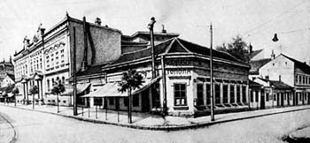

Tranzicija kafana
Baš juče prođoh pored Manježa, i dalje zatvoren zbog renoviranja i adaptacije, adaptacije na šta, pitam se, prolazim pored nekadašnjeg Malog Pariza svaki dan, već dve godine, adaptira se se sve vreme, samo nema rezultata, to je mali problem, i dalje je zatvoren, a kad se otvori, ko zna šta će da osvane.
Isto, čitam neki tekst na BBC News o dobitnicima i gubitnicima tranzicije u Rusije, tekst, onako, piše šarmantno o toj situaciji, ali čitala sam već fenomenalnu knjigu Ane Uzelac 'Deca Putina' pa znam sve to vrlo dobro.
U svakom slučaju, u ovom pomenutom textu dugogodišnji dopisnik piše kako su se tokom tranzicije promenile kafane u Moskvi:
"In the old days eating out in the Soviet Union went like this:
A waiter who looked like a guard from a hospital for the criminally insane would hand you a menu the size of a book of wallpaper samples. Slowly it would become clear that the items described did not constitute a list of items for sale, just a kind of collective folk memory of the entire Russian nation on the subject of food.
Trying to tease out of your server the one or two dishes that were actually available nearly always took longer than the process of eating dinner itself.
Nowadays it is all sushi, and service, and salads dressed in olive oil, rather than motor oil - all signs that a new Russia has risen to its feet, albeit a little unsteadily, on the ruins of the old Soviet Union."
Ruska priča deluje poznato, isti generalni trendovi kao i kod nas, samo sve malo naglašenije, i kad je u plusu i u minusu.
A ako niste znali da je Beograd imao prvu kafanu pre Pariza, Beča i ostalih evropskih metropola, e pa nisam ni ja, ali tako kaže JAT revija. Pa sad, ko veruje...
Komentari
Ja bih ambijente starih gradskih kafana zastitio zakonom. Pa, ko hoce da radi "biznis" ok, molim lepo, imas unapred odredjen radijus i NE MOZES da kafanu staru preko 50 godina pretvoris u SaladBar. Bojim se da ce autenticna srpska kafana biti jedna od zrtava tranzicije i to je po meni velika, velika steta!
 kiko | 11.10.06 13:15
kiko | 11.10.06 13:15
Ja sam citala u LA Timesu o propasti Rusije i kako nas i Rusa vise nema trista nego jedva 150 miliona.
Jada iz Eleja | 11.10.06 16:00
Odavno sam pocela da fotkam takva mesta. Sa sve fino ispisanim nazivima i radnim vremenima. Jer ostace izgleda samo na fotografijama. Nazalost. I zna se koga treba spaliti za to. Ne one sto "renoviraju", nego one sto im dozvole izdadose...u slucaju da medjusobno nisu braca, ili bar neki kumovi!
Opet nalet psovanja u glavi...Mozda cemo jednog dana podizati gradove ko na divljem zapadu, sa sve negdasnjim kafanama, ISKLJUCIVO za snimanje filmova. Bojim se vrlo lose produkcije.
vajarka | 11.10.06 21:01
Well, ako se ne promene neće dugo potrajati, jasno k'o dan. Verovatno u cugu možeš da nabrojiš desetak koje se nisu (dovoljno) promenile, pa ih više i nema...
 ubipacijentic | 12.10.06 20:39
ubipacijentic | 12.10.06 20:39
Šteta što se uništavaju stara jezgra gradova, pogotovo kafanska "niska bisera" ;)
 Goran Aničić | 12.10.06 20:47
Goran Aničić | 12.10.06 20:47
 RSS feed
RSS feed
 sadržaji se objavljuju pod
sadržaji se objavljuju pod
Komentari
Na nerve mi ide stoka koja dodje iz pi*ke materine i pocne da zatvara kafane da bi otvorili fancy mesta. Tuzno je to da ima jako jako malo ljudi koji postuju i znaju tradicionalne i prave vrednosti. A te seljacine sto oce da otvore fancy restorancice i kafice, nek ih otvaraju na drugim mestima a ne da unistavaju tradiciju stariju 500 godina od njih! Ej ljudi pa da l je normalno pozatvarati sve beogradske kafane stare po 50- 100 godina da bi se otvorili ultra fancy kafici????? A i prava mesta je trebalo zastiti dok ih je jos bilo. Ako ima jos istomisljenika/ca neka me kontaktiraju na mail. Unapred hvala.
P.S. Da je Beograd imao kafanu pre Pariza i Beca jeste istina jer su sve krenule sa istoka!!!
poslednji_boem | 14.11.07 23:31
На жалост и на Велику Чукарицу дође велики црногорац и кафану по којој се цео крај зове прекрсти у Гушти мора.Разумем да је променио намену и служи морске специјалитете на 50 метара од саве али што промени име ?
мирко | 22.12.07 19:43